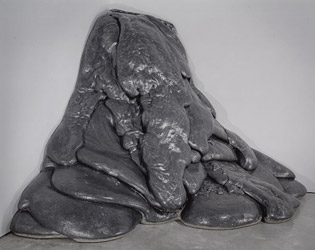
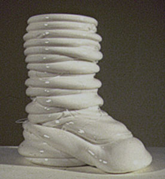

l'informe
l'informe  radical
art homepage
radical
art homepage
 l'informe
l'informe  radical
art homepage
radical
art homepage
goo/ooze/putty
[viscosity & congelation]
Wim T. Schippers: Peanut Butter Floor, 1962
[This photo: Centraal Museum, Utrecht, 1997]
Thomas Rentmeister: Ohne Titel (Nutella), 2000
Wim T. Schippers: Plast-o-lux, 1963
Louise Bourgeois: Soft Landscape, 1967

Lynda Benglis: Quartered Meteor, 1969
César: Expansion Murale, 1975

Roxy Paine: Scumak No. 20 (RF), 1999
Gotthard Graubner: Farbleib (Schneewittchen), 1963
["Pillow Piece"]
Anish Kapoor: Blood, 2000
[Fibreglass and lacquer]
César: Expansion No. 14, 1970
Thomas Rentmeister: Ohne Titel, 1994
[Polyester resin; edition of 3]
Some of the above pieces can be considered as "process art", in that their creation was a direct result of the viscosity properties of the actual material. Other pieces (Graubner, Rentmeister '94, Kapoor) allude to such processes in an essentially mimetic fashion.
More viscosity pieces by:
César
this page compilled by remko scha, 2012